Her modül aynı biçimdedir: aracın yanıtladığı planlama sorusu, ne yaptığı, tıklamalar ya da Processing parametreleri, gerçek çıktı, nasıl yorumlanacağı ve ne zaman bozulur.
Veri kaynağı
Thematic source: mahalle_population_2024.geojson (İzmir mahalle polygons, population 2024)
Raster source: kadifekale_dem_copernicus30m.tif (Copernicus DEM 30 m)
Flow source: tire_mahalle_upi_sosyoekonomik.gpkg (assembly areas + critical assets)
DEM reprojected from EPSG:4326 to EPSG:32635 (the ridge engine needs map units)
OD table: 900 real origin→critical-asset pairs (distance-decay gravity on real capacities)
Getting started
Dashboard — tek stüdyo, üç çalışma alanı
Nereden başlamalıyım?
02CartoLab'daki her şey tek bir pencereden erişilir. Sol ray üç çalışma alanı arasında geçiş yapar: Symbology Studio (Quick Style, 2.5D Buildings, Thematic Maps, Palette & Accessibility), Layout Studio (Template Gallery, Map Sheet Studio, Grid + QPT Studio, 3D Isometric Stacker) ve her algoritmayı Run düğmesiyle listeleyen Processing Hub. Alttaki katlanabilir çekmece sistem tanılamalarını ve çalışma günlüğünü tutar.
Adım adım
Plugins ▸ 02CartoLab ▸ 02CartoLab Studio ile stüdyoyu açın.
Başlıktaki durum rozeti eklentinin kendi sağlığını bildirir; her alt sistem mevcutsa ALL READY yazar.
Symbology Studio, Layout Studio ve Processing Hub arasında geçiş için sol rayı kullanın.
Her işlemin gerçekte ne yaptığını görmek için alttaki Diagnostics & Run Log'u açın — bir şey olmadığında bakılacak ilk yer burasıdır.
Processing Hub aynı zamanda belgedir: her algoritma kendi parametrelerini ve yardım metnini listeler.
Sonuç
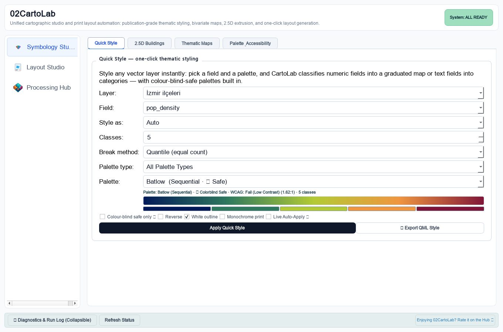
Symbology Studio · Quick Style
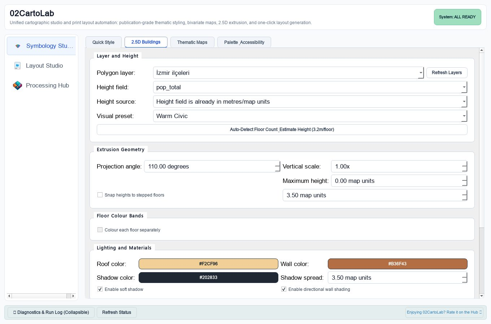
Symbology Studio · 2.5D Buildings
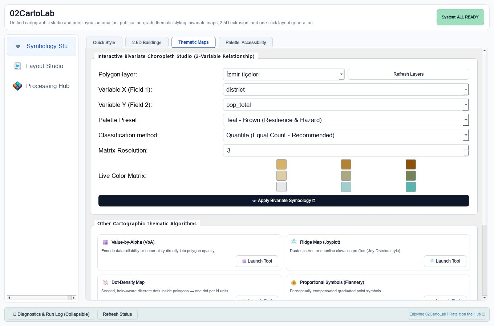
Symbology Studio · Thematic Maps
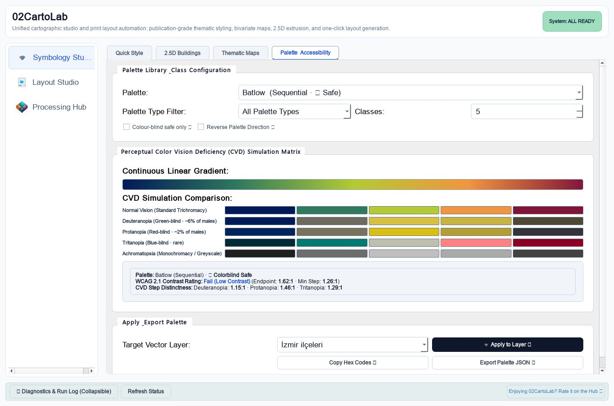
Symbology Studio · Palette & Accessibility
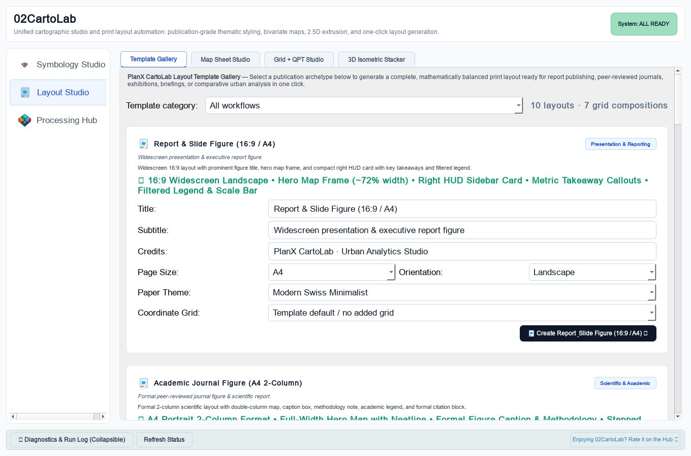
Layout Studio · Template Gallery
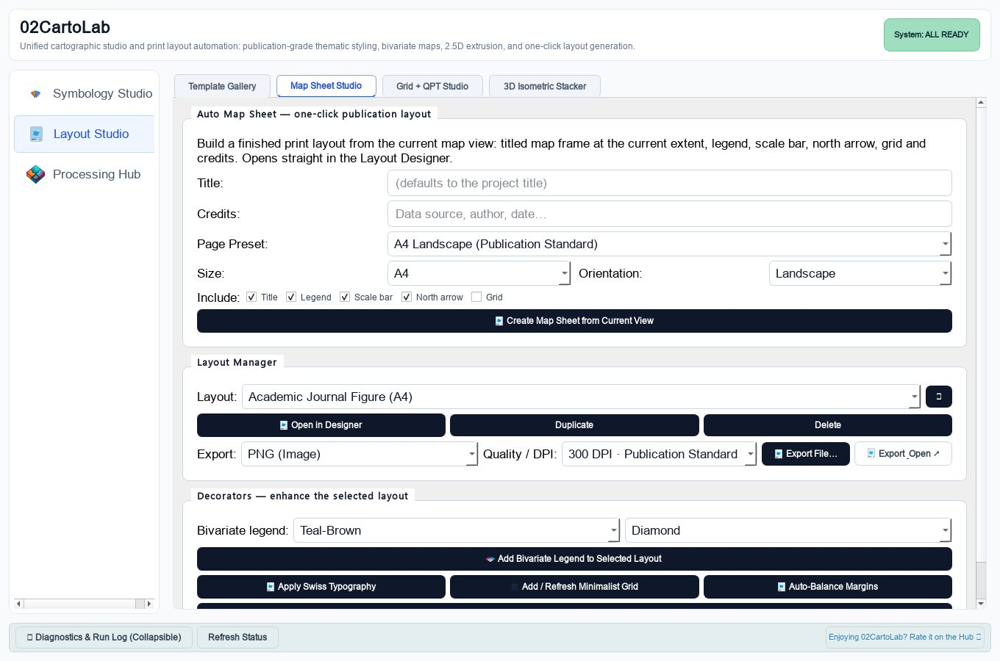
Layout Studio · Map Sheet Studio
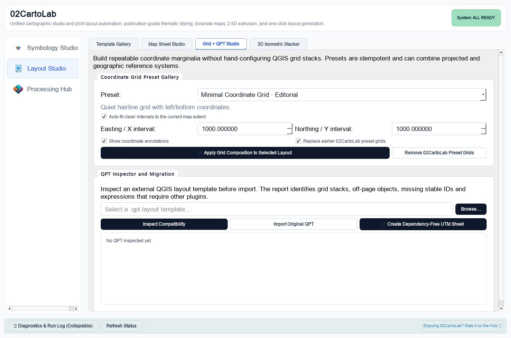
Layout Studio · Grid + QPT Studio
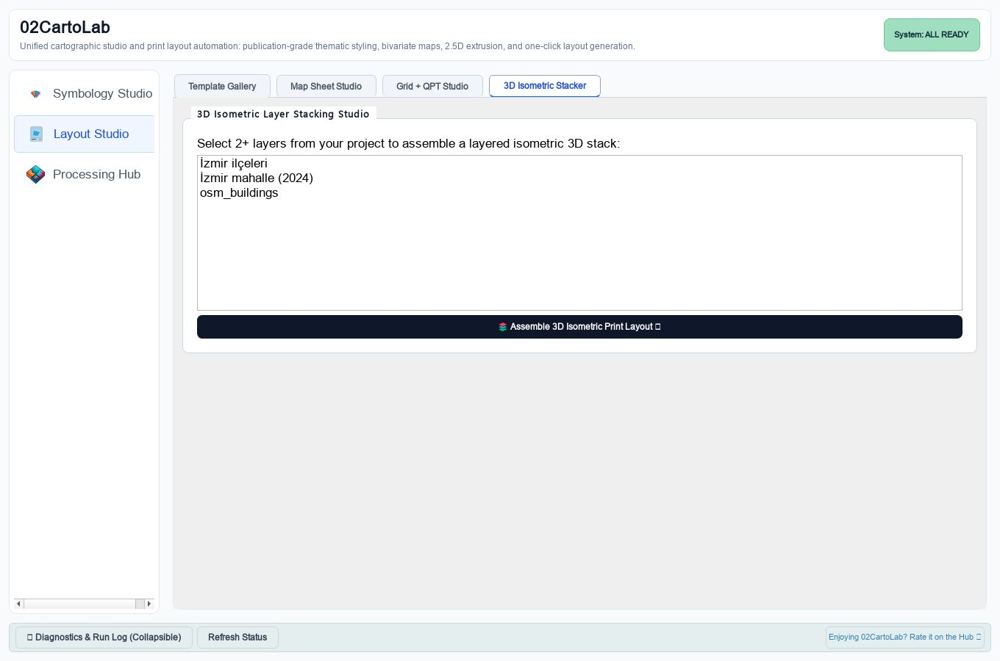
Layout Studio · 3D Isometric Stacker
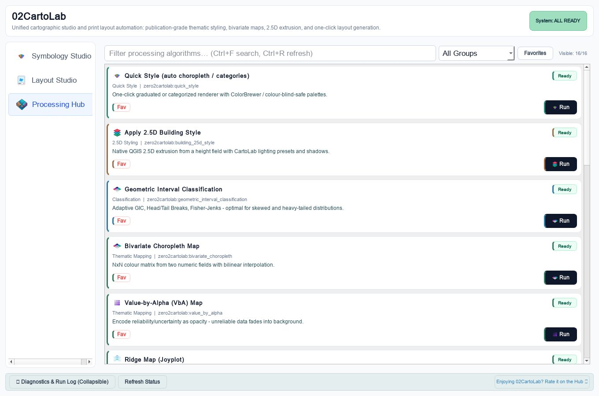
Processing Hub
Çıktıyı nasıl okuyun. Dashboard, Processing Toolbox'tan ayrı bir uygulama değildir — aynı motorlar her iki yerde açıktır. Etkileşimli, sonucu anında görmek istediğiniz işler için dashboard'u kullanın; tekrarlanacak, betiklenecek ya da toplu çalışacak her şey için Processing Hub'ı (ya da Model Builder'ı) kullanın.
Sorun giderme
Pencere açılıyor ama boş kalıyor — eklenti hâlâ yükleniyor olabilir; biraz bekleyip yeniden açın.
Bir katman combo'larda görünmüyor — katman canvas'ta görünür olmakla yetmez, projede olmalı.
Apply'e basınca hiçbir şey olmuyor — Diagnostics & Run Log'u açın; neden orada yazılıdır.
Symbology Studio
Quick Style — tek tıkla tematik stil
İzmir ne kadar yoğun ve bunu bugün yayınlanabilir bir haritaya çevirebilir miyim?
Quick Style herhangi bir vektör katmanını tek işlemle yayınlanabilir bir koroplet veya kategorik haritaya dönüştürür. Sayısal alanlar otomatik sınıflanır, metin alanları kategorilere ayrılır ve renk paleti eklentinin kendi kütüphanesinden gelir (ColorBrewer + renk körlüğü güvenli bilimsel rampalar).
Adım adım
Plugins ▸ 02CartoLab ▸ 02CartoLab Studio ile stüdyoyu aç ve Symbology Studio çalışma alanına geç.
Quick Style panelinde Layer olarak İzmir ilçe katmanını, Field olarak pop_density alanını seç.
Style as: Graduated (numeric), Classes: 5, Break method: Geometric interval — gerçek bir şehrin uzun kuyruklu yoğunluk dağılımı için doğru seçim.
Palette: Viridis (sıralı, renk körlüğü güvenli) ve beyaz kenar çizgisi işaretli kalsın.
Apply Quick Style düğmesine bas; canvas'taki katman anında yeniden stilize edilir.
Export QML Style ile aynı sembolojiyi başka projelerde yeniden kullan.
Sonuç
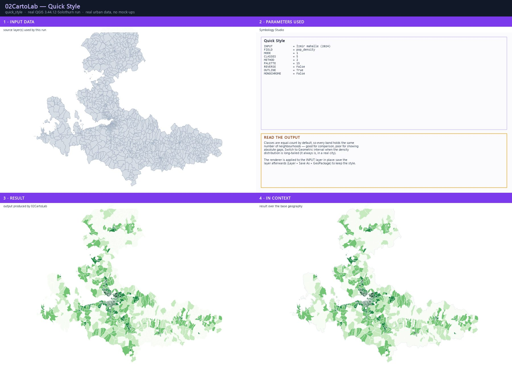
Quick Style
Çıktıyı nasıl okuyun. Sınıflar renk uzayında eşit alanlıdır ama sayıda eşit değildir. Rampanın iki ucunu karşılaştır: geometrik aralıkta en koyu bant dış yayılımı ilçeleri, en parlak bant merkezi kompakt ilçeleri kapsar. Renge değil, mutlaka lejanta bak.
Parametreler
Parameter
Açıklama
Type
Default
INPUT
Vector layer
Vector layer
—
FIELD
Field to style
Field
—
MODE
Style as
Auto (detect field type) · Graduated (numeric) · Categorized (unique values)
INPUT = İzmir mahalle (2024)
FIELD = pop_density
MODE = 1
CLASSES = 5
METHOD = 2
PALETTE = 15
REVERSE = False
OUTLINE = True
MONOCHROME = False
Sorun giderme
Alan listesi boş — katmanda sayısal alan yok veya katman projeye eklenmemiş.
Harita düz görünüyor — alan neredeyse sabit bir oran; sınıflamadan önce öznitelik tablosunda NULL değerlerini kontrol et.
Kaydetmede stil kayboluyor — Quick Style katmanı yerinde stilliyor; sembolojiyi korumak için katmanı GeoPackage olarak kaydet.
Processing ID: zero2cartolab:quick_style
Symbology Studio
Monochrome baskı — fotokopiye dayanıklı semboloji
Dergim gri ton basıyor ve şekli fotokopi ediyor. Harita okunur kalır mı?
Monochrome print açıkken Quick Style renk rampasını, değerle birlikte koyulaşan siyah-beyaz tarama ve nokta desenleriyle değiştirir. Lejant sayıları korur; böylece şekil basıldığında, fotokopi edildiğinde ya da fakslandığında bilgi kaybı olmaz.
Adım adım
Aynı katman, alan ve sınıf yöntemiyle Quick Style iş akışını tekrarlayın.
Renk paleti seçmek yerine Monochrome print işaretini işaretleyin.
Stili uygulayın ve lejantı inceleyin: her sınıf artık gri tonu değil, ayırt edici bir desen taşır.
QML stilini dışa aktarın; böylece makaledeki bütün şekiller aynı desen dilini kullanır.
Sonuç
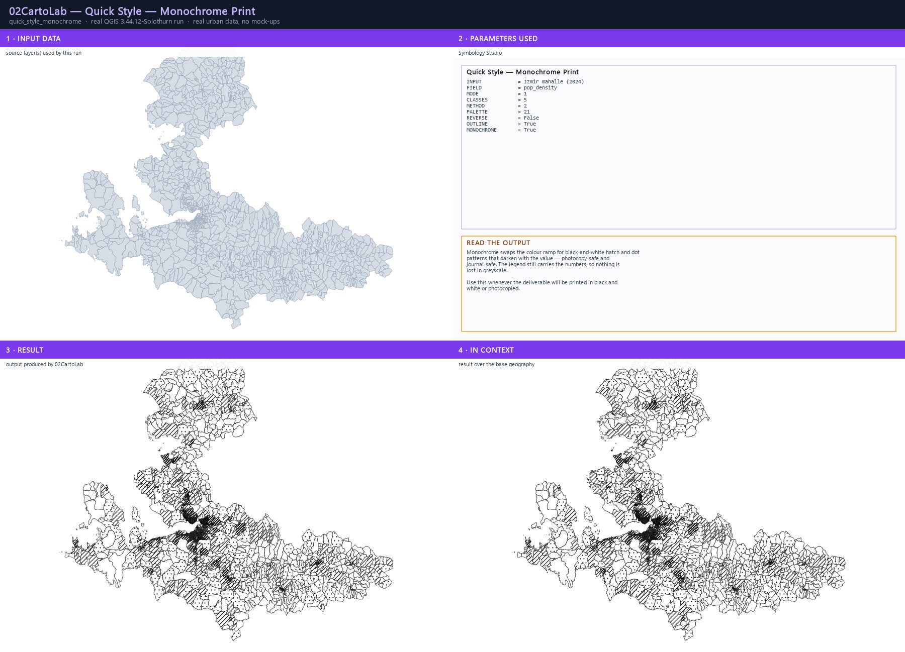
Quick Style — Monochrome Print
Çıktıyı nasıl okuyun. Desen yoğunluğu değer kanalıdır. Açık diyagonal tarama = düşük, dolu siyah = yüksek. En koyu deseni en küçük sınıfa karşı kontrol edin: son baskı boyunda iki komşu sınıf aynı okunuyorsa sınıf sayısını azaltın.
Parametreler
Parameter
Açıklama
Type
Default
INPUT
Vector layer
Vector layer
—
FIELD
Field to style
Field
—
MODE
Style as
Auto (detect field type) · Graduated (numeric) · Categorized (unique values)
INPUT = İzmir mahalle (2024)
FIELD = pop_density
MODE = 1
CLASSES = 5
METHOD = 2
PALETTE = 21
REVERSE = False
OUTLINE = True
MONOCHROME = True
Sorun giderme
Lejantta desenler aynı görünüyor — Classes değerini 5'ten 4 veya 3'e düşürün.
Katman tamamen siyah — sembol dolgusu siyah; monochrome uygulamadan önce dolguyu beyaz yapın.
Processing ID: zero2cartolab:quick_style
Symbology Studio
2.5D bina stilizasyonu — dayanıklı ekstrüzyon
Kadifekale'nin yapı kütlesini yapıştırılmış QML hile yerine gerçek 3B benzeri bir ekstrüzyonla gösterebilir miyim?
2.5D motoru, yükseklik ya da kat sayısı alanıyla sürülen yerel QGIS 25d renderer'ı uygular. Kuralı yeniden kullanılabilir bir ifade olarak yazar; böylece aynı alana sahip her katmana stil tekrar uygulanabilir ve her kat bandı kendi lejant kuralı olan lejant-dostu QML olarak dışa aktarılabilir.
Adım adım
Symbology Studio içinde 2.5D Buildings panelini açın.
Katmanı seçin ve Height field: height_m verin. Veriniz kat sayısı taşıyorsa Height source: Floor count field ve Floor height: 3.5 m yapın.
Bir malzeme ön ayarı seçin — Warm Civic, Cool Slate, Urban Core Gold ve sekiz tane daha.
Angle (45° iyi bir varsayılan), Height scale ve aykırı değerleri kırpmek için MAX_HEIGHT ayarlayın.
Kütlenin düz renk değil hacim gibi okunması için Shadow ve Wall shading'i açın.
Yerel 2.5D renderer'ı uygulayın ya da Render mode: Per-floor colour bands ile her kat için ayrı lejant kuralı alın.
QML stilini dışa aktarın.
Sonuç
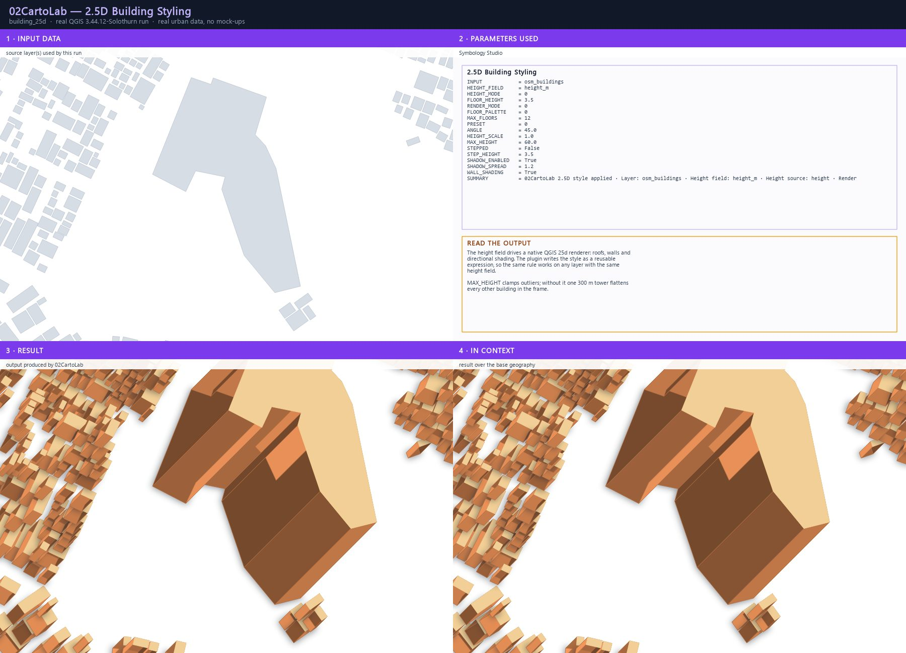
2.5D Building Styling
Çıktıyı nasıl okuyun. Düz giriş ile sonucu karşılaştırın: ekstrüzyon Kadifekale'nin cephe hattını okunur bir kütle modeline dönüştürür. MAX_HEIGHT en kritik kontroldür — onsuz 300 m'lik bir kule çerçevedeki bütün binaları düzleştirir. Gölge ancak bina ekranda yeterince büyükse okunur; yakınlaşın, bağırmayın.
Parametreler
Parameter
Açıklama
Type
Default
INPUT
Polygon layer
Vector layer
—
HEIGHT_FIELD
Height field
Field
—
HEIGHT_MODE
Height source
Height field is already in metres/map units · Floor count field (floors x floor height)
Enumeration
Height field is already in metres/map units
FLOOR_HEIGHT
Floor height, used only when height source is floor count
Hiçbir şey ekstrüzyon göstermiyor — yükseklik alanı metin veya NULL içeriyor; ifade coalesce() kullanır, NULL 0 olur.
Harita tamamen çatı rengi — Wall shading kapalı, duvar yüzleri çizilmiyor.
Katlar yanlış — kat yüksekliği verinizle uyuşmuyor; 3.5 m konut normu, ofislerde sıklıkla 3.6–4.0 m.
Processing ID: zero2cartolab:building_25d_style
Symbology Studio
Palette & Accessibility — CVD simülasyonu ve WCAG puanı
Deuteranopi görmeli bir okuyucu haritayı hâlâ okuyabilir mi ve dergimin kontrast kuralını geçiyor mu?
Palette & Accessibility denetleyicisi, eklenti kütüphanesindeki her rampayı canlı örneklerle, beş modlu renk görme bozukluğu simülasyonu (normal, deuteranopia, protanopia, tritanopia, achromatopsia) ve sayfa arka planına karşı WCAG 2.1 kontrast puanıyla listeler.
Adım adım
Symbology Studio ▸ Palette & Accessibility'i açın ve stilize ettiğiniz katmanı seçin.
Palette type ile Sequential, Diverging veya Qualitative süzgeçlerini kullanın; yalnızca doğrulanmış rampaları görmek için Colour-blind safe only kutusunu işaretleyin.
Bir palet seçin ve puan satırını okuyun: palet ailesi, renk körlüğü güvenlilik rozeti ve WCAG kontrast oranı raporlanır.
CVD simülasyon şeridini kullanarak aynı rampayı her görme bozukluğu modunda önizleyin.
İki değişkenli haritada, eksenlerin her modda da ayırt edilebilir kaldığını doğrulayın.
Sonuç
Symbology Studio · Palette & Accessibility
Çıktıyı nasıl okuyun. Bir palet, hue gradyanının yanında lightness gradyanı da taşıdığında renk körlüğü güvenlidir. Yalnızca hue'a dayalı rampalar deuteranopide birbirine karışan bantlara çöker; simülasyon şeridi bu çöküşü hakemden sonra değil, yayın öncesi görünür kılar.
Sorun giderme
Kontrast oranı düşük görünüyor — beyaz kâğıt üzerinde sol bir ramp küçük metin için WCAG'yi geçmez; rampayı koyulaştırın veya çerçeve ekleyin.
Hiç palet çıkmıyor — süzgeç çok kısıtlayıcı; önce 'Colour-blind safe only' işaretini kaldırın.
Data Preparation
Normalizasyon ve oranlar — sayıyı değil oranı haritala
Ham nüfus sadece kent ayak izini çiziyor. Bağımlılığı nasıl haritalarım?
Ham toplamlarla yapılan koroplet esas olarak 'şehir nerede kurulu' resmini çizer. Bu algoritma her alanı karşılaştırılabilir bir orana dönüştürür: pay/ paydaya oran, z-skor, sağlam z-skor (medyan/MAD), min-max, yüzdelik sıra, logaritma, konum katsayısı, kırpılmış min-max, ondalık sıra, Tukey menteşe sırası, lojistik, güç ve kuantil-uniform ölçekleme. Sonuç yeni bir alana yazılır ve otomatik stillenir.
Input olarak ilçe katmanını, Field olarak pop_total, Method olarak Rate (numerator / denominator) verin.
Denominator: pop_15_64 (çalışma çağı nüfus) ve Scale: 1000 seçin — 1 000 çalışma çağı kişi başına nüfus.
Sıralı bir palet ve 5 sınıf seçip Run'a basın.
Çıktının öznitelik tablosunu açın: yeni alan oranı tutar, katman zaten uygun gradyan renderer'ı taşır.
Sonuç
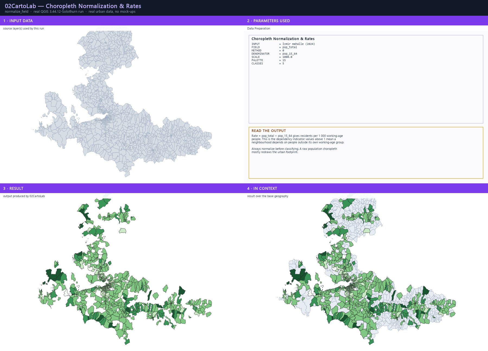
Choropleth Normalization & Rates
Çıktıyı nasıl okuyun. 1'in üzerindeki değer, mahallenin kendi çalışma çağı grubunun dışındaki insanlara bağımlı olduğu anlamına gelir. 1'in altı demografik fazlalık demektir. Harita oranı gösterir; sayı yalnızca bağlamdır.
INPUT = İzmir mahalle (2024)
FIELD = pop_total
METHOD = 0
DENOMINATOR = pop_15_64
SCALE = 1000.0
PALETTE = 15
CLASSES = 5
Sorun giderme
Sonuç boş — payday alanında NULL veya sıfır var.
Ölçek tuhaf görünüyor — logaritmik ve kuantil yöntemler ağır kuyruklu veri içindir; doğrusal değişkende Rate veya Z-score deneyin.
NULL değerler sıfır sayılıyor — önce normalizasyon yapın, sonra öznitelik tablosunda NULL'ları filtreleyin.
Processing ID: zero2cartolab:normalize_field
Classification Engine
Uyarlanabilir sınıflama — GIC, Jenks, Head/Tail
Çarpık bir kent göstergesi gerçekte kaç sınıf ister ve hangi sınıflandırma yöntemi ona uyar?
Sınıflama motoru yedi kırılım yöntemi uygular: Uyarlanabilir Geometrik Aralık (GIC), Baş/Kuyruk Kırılımları, Fisher-Jenks, standart sapma, Tukey kutu grafiği, maksimum kırılımlar ve düzgün yuvarlak kırılımlar. Çıktı katmanı sınıf alanını ve uygun renderer'ı taşır; doğrudan düzene yerleşir.
Input olarak ilçe katmanını, Field olarak pop_density, Classes olarak 5 verin.
Method: Adaptive Geometric Interval (GIC) seçin — eşit sayı dayatmaz, verinin kendi dağılım biçimini izler.
Palet seçip Run'a basın.
Sonucu Fisher-Jenks ile karşılaştırın: algoritmayı tekrar Fisher-Jenks ile çalıştırıp sınıf sınırlarını kıyaslayın.
Sonuç
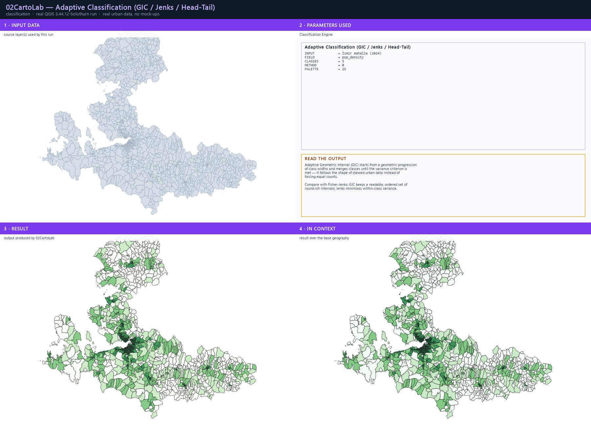
Adaptive Classification (GIC / Jenks / Head-Tail)
Çıktıyı nasıl okuyun. GIC sıralı, okunur aralıklar üretir ve verinin kendi yayılımını izler; Jenks sınıf içi varyansı minimize eder ama düzensiz sınırlar üretir. İki harita aynı görünüyorsa dağılım yeterince çarpık değildir — bu da değerli bir sonuçtur.
Parametreler
Parameter
Açıklama
Type
Default
INPUT
Input layer
Input layer
—
FIELD
Field to classify
Field
—
CLASSES
Number of classes
Number
5
METHOD
Classification method
Adaptive Geometric Interval (GIC) · Head/Tail Breaks · Fisher-Jenks Natural Breaks · Standard Deviation · Box Plot / Tukey Breaks · Maximum Distribution Breaks · Pretty Nice-Round Breaks
İki değişkenli koroplet — iki değişken, tek dürüst harita
Hangi İzmir mahalleleri hem yaşlı hem çocuk yoğun — yani aynı anda bakım ve okul gerektirenler?
İki değişkenli koroplet iki sayısal değişkeni N×N matrise sınıflar ve her poligonu iki sınıf bandının birleşimine göre renklendirir. Çıktı bivar_class alanını ve kategorize renderer'ı taşır; eklenti eşleşen lejant matrisini vektör geometri olarak da dışa aktarabilir.
Input olarak ilçe katmanını verin. FIELD_X: elderly_share (65+ payı), FIELD_Y: child_share (0-14 payı).
3×3 matris için CLASSES: 3, METHOD: Quantile (Equal Count) yapın.
PALETTE_PRESET: Blue - Orange (Density & Economy) seçin — ya da dört köşeyi denetlemek için Custom Corner Colours kullanın.
Run'a basın. Çıktı bivar_class üzerinde kategorize renderer ile otomatik stillenir.
Aynı ayarlarla Export Bivariate 2D Legend Matrix'i çalıştırıp eşkenar dörtgen ya da kare lejantı elde edin.
Sonuç
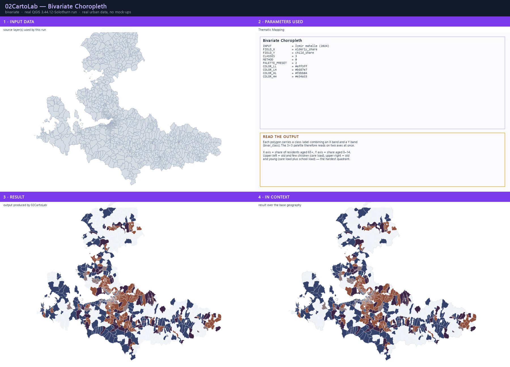
Bivariate Choropleth
Çıktıyı nasıl okuyun. Matrisi aynı anda iki eksen olarak okuyun. Sağ üst hücre — her iki eksende de yüksek — en zor hücredir: aynı mahallelerde yaşlı nüfusa bakım ve genç nüfusa okul gerekir. Lejant süs değildir; eksen etiketleri olmadan renkler anlamsızdır.
Tek renk çıkıyor — alanlardan birinin varyansı neredeyse yok; öznitelik tablosunu kontrol edin.
Köşeler yerinde değil — Custom seçiliyken köşe renklerinin karıştığından emin olun (DÜŞÜK-DÜŞÜK, DÜŞÜK-YÜKSEK, YÜKSEK-DÜŞÜK, YÜKSEK-YÜKSEK).
Harita okunmuyor — CLASSES değerini 2'ye düşürün ya da daha yüksek kontrastlı bir ön ayar seçin.
Processing ID: zero2cartolab:bivariate_choropleth
Thematic Mapping
İki değişkenli lejant matrisi — resmi değil anahtarı dışa aktar
Yayınlanabilir bir iki değişkenli lejantı elle çizmeden makaleme nasıl alırım?
Bu algoritma N×N renk matrisini bağımsız bir vektör poligon katmanı ve HTML önizleme olarak yazar. Klasik iki değişkenli eşkenar dörtgen anahtar için DIAMOND'u işaretleyin ya da kare kullanın. Geometri doğrudan baskı düzenine lejant öğesi olarak yerleştirilebilir.
CLASSES: 3 yapın ve haritayla aynı PALETTE_PRESET'i seçin.
Eşkenar dörtgen anahtar için DIAMOND'u işaretleyin; baskı düzeni için CELL_SIZE 30 mm'de bırakın, sunum için küçültün.
LABEL_X ve LABEL_Y'yi harita altyazısında kullanılan değişken adlarıyla birebir aynı yapın.
Run'a basıp çıktı konumunu seçin. Katman matrisi taşır; OUTPUT_HTML tarayıcıya hazır önizleme verir.
Sonuç
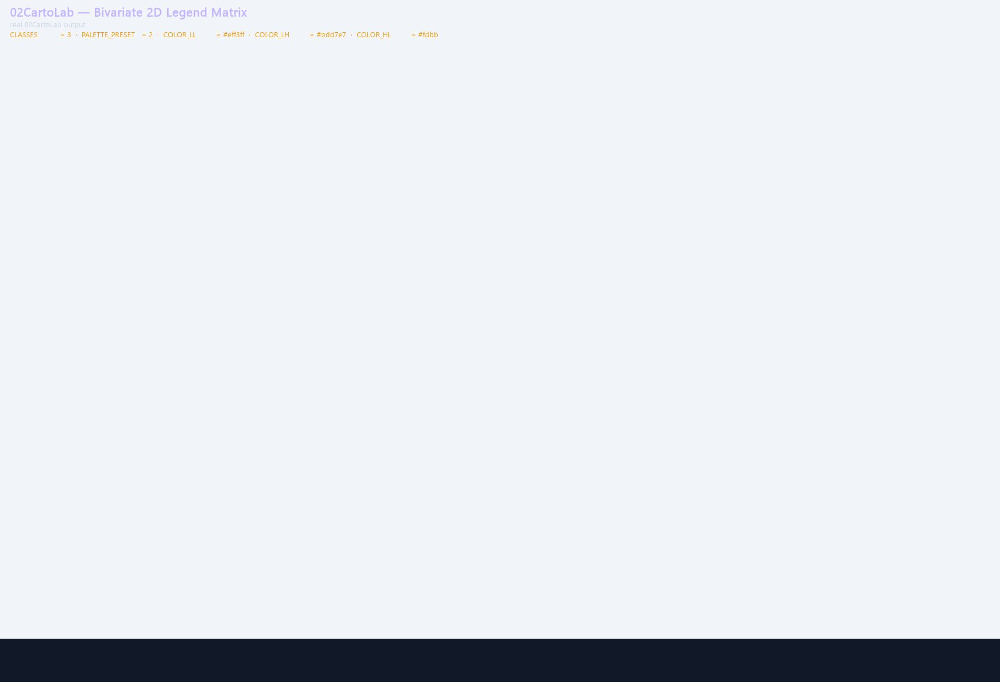
Bivariate 2D Legend Matrix
Çıktıyı nasıl okuyun. Matris, iki değişkenli haritanın lejantıdır. Matristeki etiketler altyazıyla eşleşmiyorsa okuyucu haritayı çözemez. Matrisi her seferinde haritayla aynı ön ayar ve sınıf sayısıyla üretin.
Parametreler
Parameter
Açıklama
Type
Default
CLASSES
Number of classes per axis (N x N)
Number
3
PALETTE_PRESET
Colour Palette Preset
Teal - Brown (Environment & Resilience) · Stevens Pink - Cyan (Demographics & Social) · Blue - Orange (Density & Economy) · Purple - Green (Land Use & Canopy) · Night Neon (Dark Theme Visuals) · Custom Corner Colours
Tahminim bazı mahallelerde güvenilmez. Verinin yokmuş gibi görünmesine yol açmadan bunu nasıl gösteririm?
Value-by-Alpha tematik değişkeni güvenilirlik değişkeninden ayırır: hue değeri, opaklık güveni taşır. Düşük güvenli özellikler 'veri yok' rengine kaybolmak yerine soluklaşır — harita kendi belirsizliğini söyler.
FIELD_COLOUR olarak pop_density verin — okuyucunun görmesini istediğiniz değer.
FIELD_ALPHA olarak working_share verin — çalışma çağı nüfusun payı; burada güvenilirlik vekili olarak kullanılıyor.
ALPHA_MIN: 64 ve ALPHA_MAX: 255 verin. İkisi de 0–255 opaklık ölçeğinde tam sayıdır: 0 görünmez, 255 tam opak. 64, en düşük güvenli alanların %25 görünür kalması demektir; 255 en güvenlilerin dolu olması.
CVD güvenli bir palet (Cividis) ve 5 sınıf seçip Run'a basın.
Sade koropletle karşılaştırın: soluk alanlar tam olarak tahminin güvenilmemesi gereken yerlerdir.
Sonuç
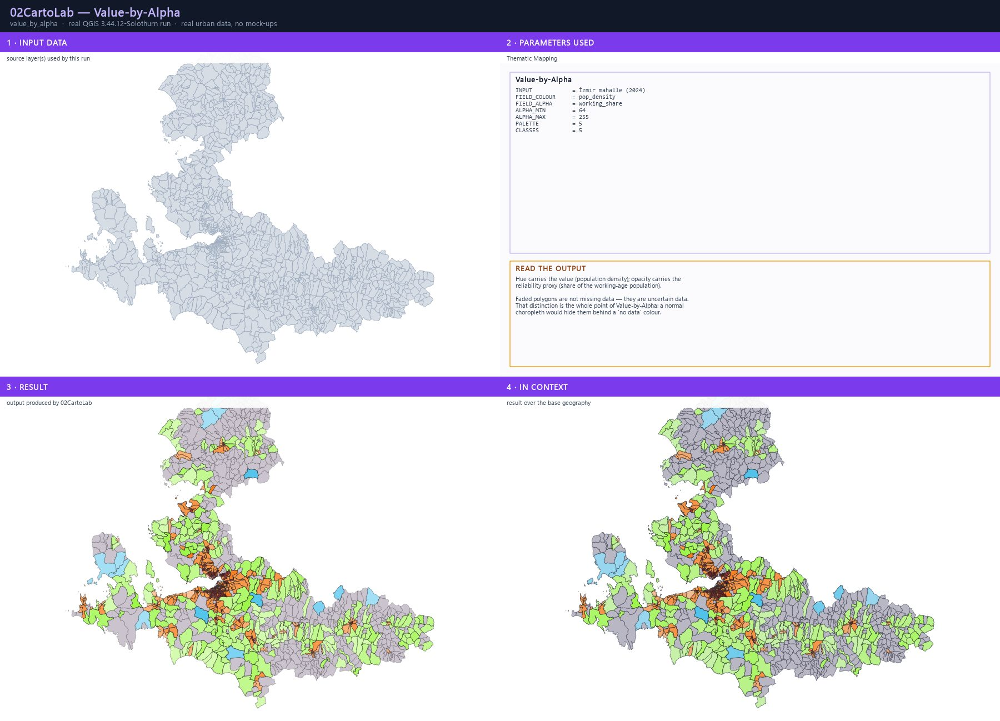
Value-by-Alpha
Çıktıyı nasıl okuyun. Soluk bir poligon eksik veri değildir — belirsiz veridir. Bu ayrımın tamamı mesele: normal koroplet belirsizliği tek bir gri arkasında saklar ve bu 'burada hiçbir şey yok' gibi okunur. Altyazıda alfa değişkeninin ne anlama geldiğini açıkça yazın, yoksa okuyucu bilemez.
Harita boş çıkıyor — ALPHA_MIN/MAX 0–255 ölçeğinde tam sayıdır. 0.25 ve 1.0 yazmak sessizce 0 ve 1'e kırpılır ve her şey görünmez olur. 64 ve 255 kullanın.
Her şey soluk — alfa alanı ters veya aralığı çok dar; alan istatistiklerini kontrol edin.
Harita sıradan koroplet gibi görünüyor — ALPHA_MIN ile ALPHA_MAX çok yakın.
Processing ID: zero2cartolab:value_by_alpha
Thematic Mapping
Ridge map — her rasteri kabartıya dönüştür
Kadifekale'nin arazisini — ya da herhangi bir sürekli yüzeyi — düz gölgeleme yerine ridge-line haritası olarak gösterebilir miyim?
Ridge motoru bir rasterı paralel tarama çizgileri boyunca örnekler ve her tarama çizgisini bir profil olarak çizer; Joy-Division grafiğinin yığılmış sırtlarını üretir. Kaynak DEM, ısı yüzeyi, yoğunluk rasterı ya da erişilebilirlik indeksi olabilir.
Adım adım
Önce rasterı projeksiyonlu bir CRS'ye reprojeksiyonlayın — Raster ▸ Reproject Project Layer ya da Processing ▸ GDAL ▸ Reproject. Ridge motoru ham yüksekliği dikey büyütmeyle çarpıp tarama çizgisinin konumuna ekler; derece cinsinden bir DEM sırtları binlerce derece öteye fırlatır. Eklenti coğrafi CRS'li bir girdiyi açıklayıcı bir hata mesajıyla reddeder.
RASTER olarak reprojeksiyonlanmış DEM'i, EXTENT olarak istediğiniz alanı DEM'in kendi CRS'inde verin (xmin,xmax,ymin,ymax).
N_LINES: 120 sık kabartı verir. SMOOTH: 2 tek hücrelik gürültüyü temizler.
VERTICAL_SCALE, ham yüksekliğin büyütme çarpanıdır. Veriden türetin: (harita yüksekliği × 0.3) ÷ en yüksek kot, en yüksek sırtın çerçevenin yaklaşık üçte biri kadar yükselmesini sağlar. Değiştirip karşılaştırın: az büyütme kabartıyı düzleştirir, çok büyütme karikatüre çevirir.
Çıktıyı nasıl okuyun. Yatay eksen mesafe, dikey eksen yüzey değeridir. Koyu sırtlar yüksek zemindir. VERTICAL_SCALE'i değiştirip arazinin karakterinin nasıl değiştiğini izleyin: az büyütme düzleştirir, çok büyütme karikatüre çevirir. Doğru değer, yapıyı uydurmadan ortaya çıkaran değerdir.
Eklenti girdiyi reddediyor — raster coğrafi CRS'de (EPSG:4326). UTM'e reprojeksiyonlayın; hata mesajı bunu açıkça söyler.
Sırtlar tek bir dikey çizgiye çöküyor — aynı neden ya da dikey büyütme derece değerlerine uygulanmış.
Sırtlar düz çizgi — VERTICAL_SCALE kot aralığına göre çok düşük.
Sırtlar gürültülü — SMOOTH'u artırın.
Processing ID: zero2cartolab:ridge_map
Thematic Mapping
Nokta yoğunluğu haritası — bir nokta, N kişi
Bu mahallelerde insanlar gerçekte nerede yaşıyor, sadece kaç kişi değil?
Nokta yoğunluğu motoru her poligonun içine noktalar eker — sayım alanında her N birim için bir nokta — kenarlardan uzak, deliklerin içine asla yerleştirmeden. Aynı seed her zaman aynı haritayı üretir; rapor içinde şekiller tekrarlanabilir olur.
INPUT olarak ilçe katmanını, FIELD olarak pop_total verin.
VALUE_PER_DOT: 500 yapın — 500 kişi başına bir nokta.
DOT_SIZE: 2.0 mm, DOT_COLOR ve SEED (42 iyi bir tekrarlanabilir varsayılan) seçin.
Run'a basın ve aynı değişkenin koropletiyle karşılaştırın: noktalar yoğunluğun nerede olduğunu, sadece miktarını değil gösterir.
Sonuç
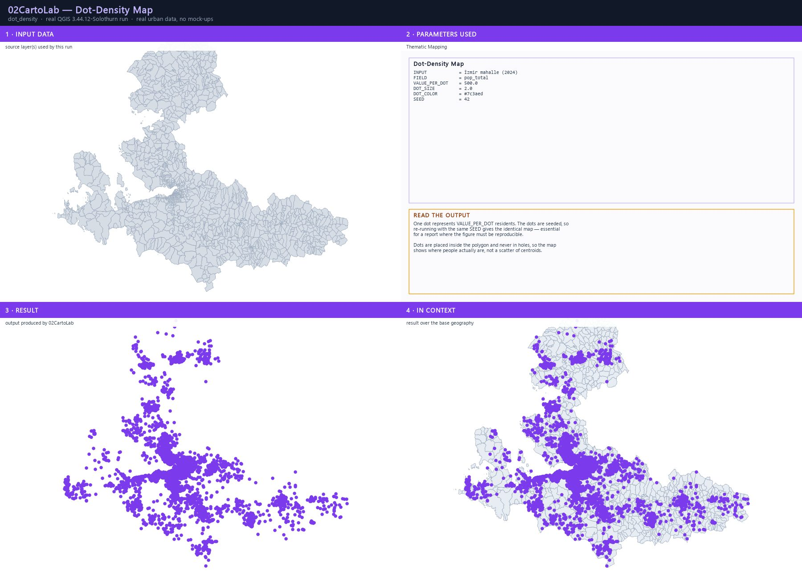
Dot-Density Map
Çıktıyı nasıl okuyun. Nokta deseni, koropletin kaybettiği mekân bilgisini taşır: yoğun bir ilçenin tek bir kompakt çekirdekte mi yoğunlaştığını, düzgün dağılıp dağılmadığını gösterir. Aynı veri kümesinin şekilleri arasında seed'i asla değiştirmeyin — aynı veri aynı resmi üretmelidir.
Parametreler
Parameter
Açıklama
Type
Default
INPUT
Input polygon layer
Input layer
—
FIELD
Count field
Field
—
VALUE_PER_DOT
Value represented by one dot
Number
100.0
DOT_SIZE
Dot marker size (mm)
Number
1.0
DOT_COLOR
Dot marker color
Colour
—
SEED
Random seed
Number
42
OUTPUT
Dot-density output
Output layer
—
Ekran görüntüleri için kullanılan tam çalıştırma
INPUT = İzmir mahalle (2024)
FIELD = pop_total
VALUE_PER_DOT = 500.0
DOT_SIZE = 2.0
DOT_COLOR = #7c3aed
SEED = 42
Sorun giderme
Çok fazla nokta — VALUE_PER_DOT'u artırın (daha az nokta, aynı anlam).
Noktalar poligonu taşıyor — sayım alanı alanı aşıyor; bu veri sorunudur, çizim sorunu değil.
Harita çalıştırmalar arasında değişiyor — seed değiştirilmiş.
Processing ID: zero2cartolab:dot_density
Thematic Mapping
Oransal semboller — Flannery düzeltmeli daireler
Değerlerimiz poligonlarda değil noktalarda. Okuyucunun gözünü yanıltmadan sembolleri nasıl boyutlandırırız?
Oransal sembol motoru Flannery düzeltmeli gradyan nokta sembolleri üretir: insanlar alan farklarını sistematik olarak küçük gördüğü için sembol alanları, algılanan boyut gerçek değere eşit olacak şekilde ölçeklenir. Beş sembol şekli sunulur ve lejant iç içe değerleri taşır.
Şekil siyah-beyaz basım için önemliyse SHAPE: Circle, Square veya Diamond seçin.
FLANNERY işaretli kalsın, dolgu ve kenar renklerini ayarlayıp Run'a basın.
Sonucu düzene yerleştirin: lejant iç içe örnek değerlerle otomatik üretilir.
Sonuç
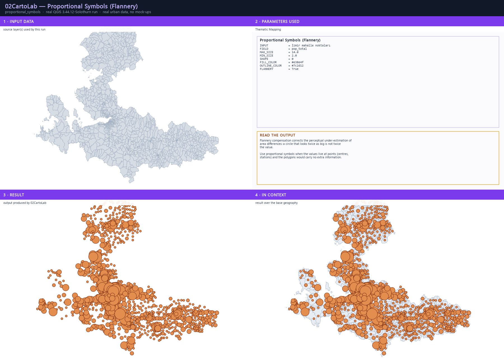
Proportional Symbols (Flannery)
Çıktıyı nasıl okuyun. Değeri sembolün yarıçapı değil, alanı taşır. Flannery düzeltmesi, iki kat büyük görünen bir dairenin aslında çok daha fazla okunduğu belgelenmiş insan eğilimini düzeltir. Kapatırsanız harita sessizce yaklaşık üçte bir kadar yanlış konuşur.
Parametreler
Parameter
Açıklama
Type
Default
INPUT
Input layer
Input layer
—
FIELD
Magnitude field
Field
—
MAX_SIZE
Maximum symbol size (mm)
Number
16.0
MIN_SIZE
Minimum symbol size (mm)
Number
2.0
SHAPE
Symbol shape
Circle · Square · Diamond · Triangle · Star
Enumeration
Circle
FILL_COLOR
Symbol fill color
Colour
—
OUTLINE_COLOR
Symbol outline color
Colour
—
FLANNERY
Apply Flannery perceptual compensation
Boolean
True
OUTPUT
Proportional symbols output
Output layer
—
Ekran görüntüleri için kullanılan tam çalıştırma
INPUT = İzmir mahalle noktaları
FIELD = pop_total
MAX_SIZE = 14.0
MIN_SIZE = 2.0
SHAPE = 0
FILL_COLOR = #e38e4f
OUTLINE_COLOR = #7c2d12
FLANNERY = True
Sorun giderme
Semboller çok büyük ve haritayı kaplıyor — MAX_SIZE'ı küçültün.
Küçük değerler görünmez — MIN_SIZE'ı artırın ya da girdiyi ilk N ile süzün.
Lejantta değer yok — çıktı katmanı düzenin lejantına eklenmeli.
Processing ID: zero2cartolab:proportional_symbols
Thematic Mapping
Kalkış–Varış akış haritası — eğri istek çizgileri
İnsanlar veya mallar yerler arasında nasıl, hangi yönde hareket ediyor?
Akış motoru bir kalkış–varış tablosunu haritada eğri, oklu istek çizgilerine dönüştürür. Genişlik hacimle orantılıdır, büyük akışlar önce çizilir ki küçükler üstte kalsın, A→B ile B→A ayrı tutulur; böylece dönüş yolculuğu gidişin altında kaybolmaz.
Adım adım
Benzersiz id alanı olan bir ZONES katmanı (poligon ya da nokta) ve üç alanlı bir OD tablosu hazırlayın: kalkış, varış, hacim. Bu kılavuzla birlikte gelen data/od_table.csv çalışan bir örnektir.
ZONES ve ZONE_ID'yi verin, sonra FLOWS ile ORIGIN, DEST ve VOLUME alan adlarını atayın.
Okları korumak ve ters yönleri ayırmak için DIRECTED'i işaretleyin; gürültüyü atmak için MIN_VOLUME, yalnızca en güçlü bağları tutmak için TOP_N kullanın.
CURVATURE (0.3 iyi bir varsayılan), MAX_WIDTH / MIN_WIDTH ve çizginin kancadan ayrı başlaması için END_GAP değerlerini ayarlayın.
Run'a basın. Çıktı hacme göre gradyanlaştırılır ve büyük akışlar altta çizilir.
Sonuç
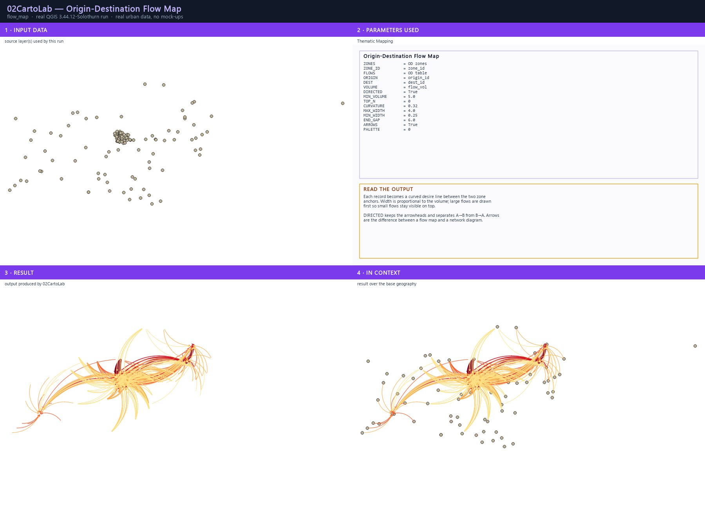
Origin-Destination Flow Map
Çıktıyı nasıl okuyun. Çizgi genişliği hacimdir, eğrilik tamamen grafiktir, ok başı yöndür. Haritayı yol haritası değil istek çizgileri ağı olarak okuyun: kesişen çizgiler rakip rotaları ifade eder, kavşak değil. Dönüş akışı görünmüyorsa DIRECTED büyük olasılıkla kapalıdır.
Parametreler
Parameter
Açıklama
Type
Default
ZONES
Zones layer
Input layer
—
ZONE_ID
Zone id field
Field
—
FLOWS
Origin-destination table
Input layer
—
ORIGIN
Origin id field
Field
—
DEST
Destination id field
Field
—
VOLUME
Volume field
Field
—
DIRECTED
Keep directions separate (A→B and B→A)
Boolean
True
MIN_VOLUME
Minimum volume to draw
Number
TOP_N
Keep only the N largest flows (0 = all)
Number
CURVATURE
Curvature (0 = straight lines)
Number
0.2
MAX_WIDTH
Maximum line width (mm)
Number
5.0
MIN_WIDTH
Minimum line width (mm)
Number
0.3
END_GAP
Gap at each end (% of flow length)
Number
4.0
ARROWS
Draw arrowheads
Boolean
True
PALETTE
Colour ramp
YlOrRd · Blues · Viridis · Plasma · Magma · Purples · Greys
Enumeration
YlOrRd
OUTPUT
Flow lines
Output layer
—
Ekran görüntüleri için kullanılan tam çalıştırma
ZONES = OD zones
ZONE_ID = zone_id
FLOWS = OD table
ORIGIN = origin_id
DEST = dest_id
VOLUME = flow_vol
DIRECTED = True
MIN_VOLUME = 5.0
TOP_N = 0
CURVATURE = 0.32
MAX_WIDTH = 4.0
MIN_WIDTH = 0.25
END_GAP = 6.0
ARROWS = True
PALETTE = 0
Sorun giderme
Hiç çizgi çıkmıyor — tablodaki kalkış/varış id'leri ZONE_ID değerleriyle eşleşmiyor; algoritma eşleşmeyen id'leri uyarır.
Tüm çizgiler aynı genişlikte — VOLUME metin bir alana ya da sabite işaret ediyor.
Çizgiler kancanın içinde başlıyor — END_GAP değerini artırın.
Processing ID: zero2cartolab:flow_map
Cartogram Engine
Sürekli alan kartogramı — değere göre yeniden biçimlendir
Alanın insan anlamına geldiği bir haritada İzmir nüfusu gerçekte nerede yaşıyor?
Kartogram motoru her poligonu, alanı seçilen değerle orantılı olacak şekilde sürekli olarak bozar; ortak sınırlar bitişik kalır ve komşuluklar korunur. Sonuç, topolojiyi koruyan ve coğrafyanın doğru ama alanın mesajı taşıdığı bir haritadır.
INPUT olarak projeksiyonlu bir poligon katmanı verin — motor alanları map units ölçer, coğrafi CRS reddedilir. EPSG:32635'teki ilçe katmanını kullanın.
FIELD: pop_total yapın.
MAX_ITERATIONS: 60 ve MAX_ERROR: 5 (ortalama alan hatası, yüzde) difüzyonun ne kadar süreceğini belirler.
PALETTE: Viridis seçip Run'a basın.
İki çıktıyı okuyun: ITERATIONS (kullanılan tur) ve RESIDUAL_ERROR (alanların hedeften ne kadar uzak olduğu).
Sonuç
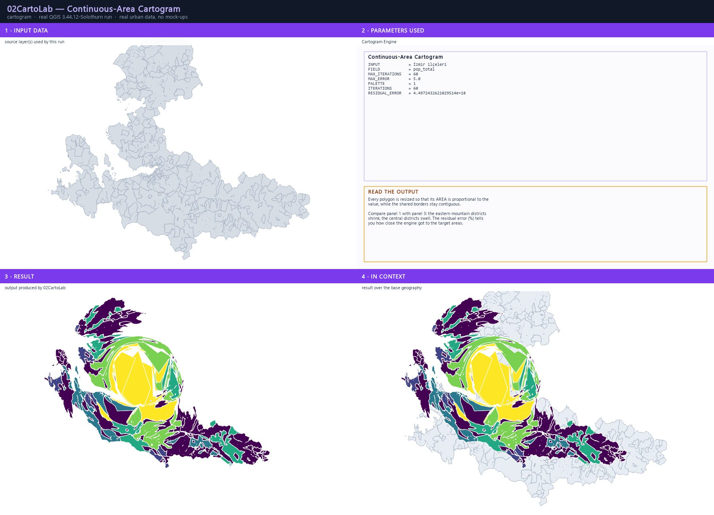
Continuous-Area Cartogram
Çıktıyı nasıl okuyun. Giriş ile sonucu karşılaştırın: dağlık doğu ilçeleri nüfuz az olduğu için neredeyse yok olana kadar küçülür, kompakt merkez ilçeler büyür. Kartogram komşuluk yapısını korur; bir ilçe komşularından kopup yüzelmez — Dorling kartogramının okunabilir olmamasının nedeni budur.
Dorling kartogramı her poligonu, alanı değerle orantılı, kuvvet yönlü gevşeme ile özgün konumuna yakın duran bir daireyle değiştirir. Değeri büyük ama alanı küçük ilçeler, ezilip kaybolmak yerine görünür kalır.
Adım adım
Processing Toolbox ▸ 02CartoLab ▸ Dorling Circle Cartogram'ı açın.
INPUT olarak ilçe katmanını, FIELD: pop_total verin.
SIZE_FACTOR daireleri ölçekler; ATTRACTION (0.6) onları özgün konumlarına çeker; GAP (3.0) dairelerin birbirine değmesini engeller.
ITERATIONS: 300 gevşemenin yerleşmesi için zaman tanır.
PALETTE: Viridis seçip Run'a basın.
Yerleşimin ne kadar oturduğunu görmek için ROUNDS ve RESIDUAL çıktılarını okuyun.
Sonuç
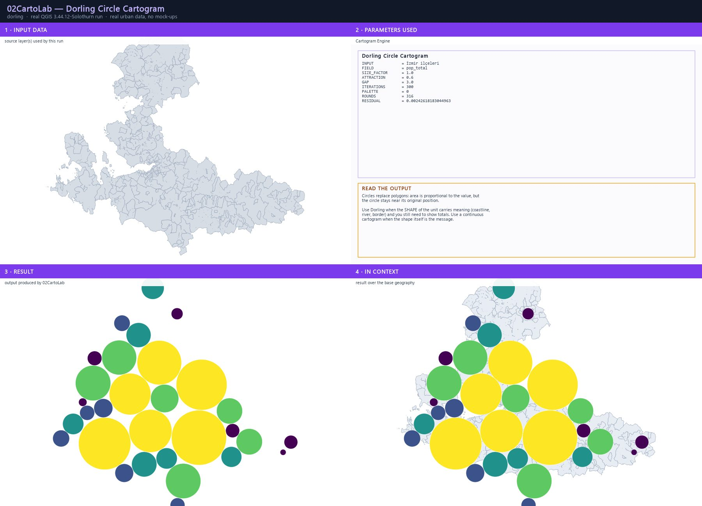
Dorling Circle Cartogram
Çıktıyı nasıl okuyun. Birimin şekli bilgi taşıyorsa — kıyı şeridi, nehir, sınır — ve yine de toplamları göstermek istiyorsanız Dorling kullanın. Şekil kendisi mesajsa sürekli alan kartogramını kullanın. Bir Dorling dairesi 'şu kadar nüfus, yaklaşık burada' der; bozulmuş bir poligon 'şu kadar nüfus ve baskı altındaki arazi şöyle görünüyor' der.
Parametreler
Parameter
Açıklama
Type
Default
INPUT
Areal units (polygons)
Input layer
—
FIELD
Value field
Field
—
SIZE_FACTOR
Size factor (total circle area / layer area)
Number
0.5
ATTRACTION
Attraction toward home position (0-1)
Number
0.1
GAP
Gap between circles (layer units)
Number
ITERATIONS
Settling iterations
Number
150
PALETTE
Colour ramp
Viridis · YlGnBu · YlOrRd · Plasma · Magma · Blues · Purples
Enumeration
Viridis
OUTPUT
Dorling cartogram
Output layer
—
Ekran görüntüleri için kullanılan tam çalıştırma
INPUT = İzmir ilçeleri
FIELD = pop_total
SIZE_FACTOR = 1.0
ATTRACTION = 0.6
GAP = 3.0
ITERATIONS = 300
PALETTE = 0
ROUNDS = 316
RESIDUAL = 0.00242618183044963
Sorun giderme
Daireler üst üste biniyor — GAP değerini artırın.
Daireler özgün konumlarından çok uzaklaşıyor — ATTRACTION'ı düşürün.
Daireler görünmez — değerler SIZE_FACTOR'a göre çok küçük; artırın.
Processing ID: zero2cartolab:dorling_cartogram
Aggregation
Hexbin toplulaştırma — aşırı çakışma olmadan yoğunluk
Çok fazla nokta, çok az harita. Onları nasıl dürüstçe toplulaştırırım?
Hexbin motoru bir nokta katmanını nokta üçgenli (pointy-top) altıgen ızgaraya böler ve hücre başına bir ağırlık toplar — sayım, toplam ya da ortalama. Altıgenler boşluk bırakmadan düzlemi döşer; bu, yoğunluk yüzeyini sürekli tutarken gerçek yapıyı gizleyen aşırı çakışmayı kaldırır.
INPUT olarak nokta katmanı verin — ilçe katmanının her biri pop_total taşıyan iç noktaları.
CELL_SIZE: 1500 (altıgen kenar uzunluğu, map units — analiz ağınızın ölçeği) ve WEIGHT: pop_total yapın.
STAT: Sum of weight ile hücre başına nüfus biriktirin, ortalama istiyorsanız Mean of weight.
CLASSIFIER: Quantile ve CLASSES: 5 seçip bir palet verin ve Run'a basın.
Çıktı hex_count, hex_sum ve hex_mean alanlarını taşır; yeniden sınıflamak için yeniden hesap yapmanıza gerek kalmaz.
Sonuç
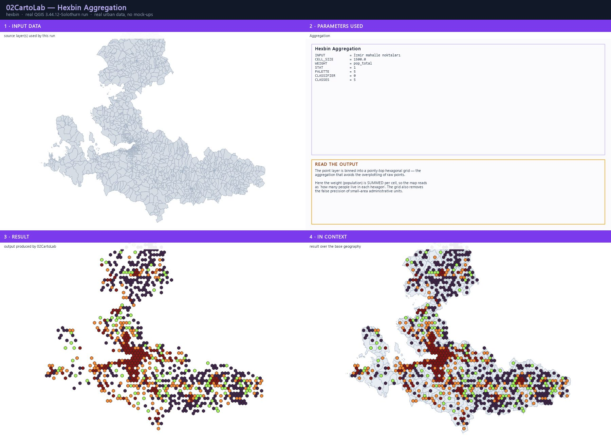
Hexbin Aggregation
Çıktıyı nasıl okuyun. Altıgen ağ, küçük idari birimlerin yarattığı sahte kesinliği ortadan kaldırır: harita, keyfi sınırların yamaları yerine pürüzsüz bir yüzey gösterir. Hücre boyutunu sorunuzdan seçin: 1.5 km hücreler mahalle sorularına, 500 m hücreler sokak düzeyi sorulara yanıt verir.
Görsel merkez etiket noktaları — şeklin içinde kalan etiketler
Mahalle adlarım neden sürekli mahallelerin dışına düşüyor?
Ağırlık merkezi etiketleri içbükey şekillerin dışına taşar. Etiket noktası motoru her poligon için erişilemezlik kutbunu (polygon edge'e en uzak nokta) hesaplar — bu noktanın şeklin içinde olduğu garanti edilir — ve onu yeni bir nokta katmanına yazar; etiket katmanınızla birleştirebilirsiniz.
INPUT olarak poligon katmanını, PRECISION: 1.0 (map units cinsinden arama toleransı; daha küçük daha hassas) verin.
Run'a basın. Çıktı her poligon için bir çapa noktası olan bir nokta katmanıdır.
Çapa katmanını etiket katmanınızla poligon id üzerinden birleştirin.
Etiket katmanında çapa modunu birleştirilen noktaya ayarlayın ve hâlâ çakışan etiketler için çağırma çizgisi ekleyin.
Sonuç
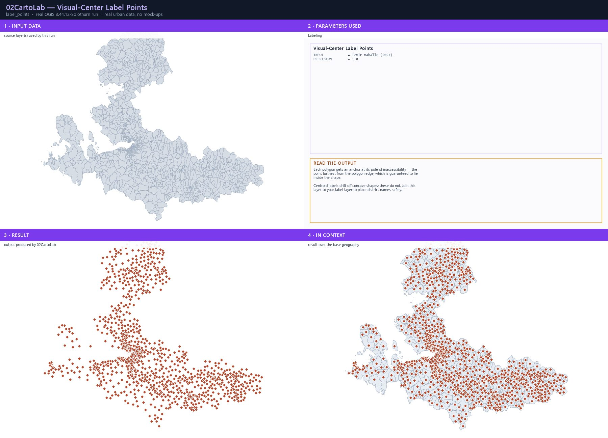
Visual-Center Label Points
Çıktıyı nasıl okuyun. Çapa, şeklin içindeki görsel olarak en güçlü konumdur — bir üçgenin optik merkezine logo koyma ilkesinin aynısı. Uzun, ince ya da hilal biçimli ilçelerde okunur bir etiket ile denizde asılı kalan bir etiket arasındaki fark budur.
Parametreler
Parameter
Açıklama
Type
Default
INPUT
Input polygon layer
Input layer
—
PRECISION
Precision (map units, 0 = auto)
Number
OUTPUT
Label points output
Output layer
—
Ekran görüntüleri için kullanılan tam çalıştırma
INPUT = İzmir mahalle (2024)
PRECISION = 1.0
Sorun giderme
Çapalar tam içeride değil — PRECISION'u artırın (daha kaba arama) ya da geometriyi Fix geometries ile düzeltin.
Etiketler hâlâ çakışıyor — çapa içerilemeyi çözer, çakışmayı değil; çağırma çizgisini ya da eklentinin etiket yerleşim ayarlarını kullanın.
Bazı poligonlarda sonuç boş — geometri geçersiz; önce Fix geometries çalıştırın.
Processing ID: zero2cartolab:label_points
Map Reference
Graticule — etiketli referans ızgarası
Okuyucum haritada bir noktayı bulabilmeli. Hangi referans ızgarayı ekleyeyim?
Graticule motoru belirli aralıklarla boylam ve enlem çizgilerini çizer ve her çizgiye koordinat etiketi ekler. Tematik haritayı konumlanabilir ve kaynak gösterilebilir kılan en ucuz yöntemdir.
EXTENT'i katmanın CRS'inde harita alanı olarak verin, örn. 500000,650000,4050000,4120000 [EPSG:32635].
X_INTERVAL ve Y_INTERVAL: 10 km'lik metrik ızgara için 10000, 1° coğrafi ızgara için 1 yapın.
LINE_STYLE: Dashed Line (sakin referans), LINE_COLOR: gri ve LINE_WIDTH: 0.35 seçin.
Run'a basın ve sonucu veri katmanlarının ALTINA ekleyin.
Survey tipi neatline için Layout Studio'daki Grid + QPT Studio ön ayarlarını kullanın.
Sonuç
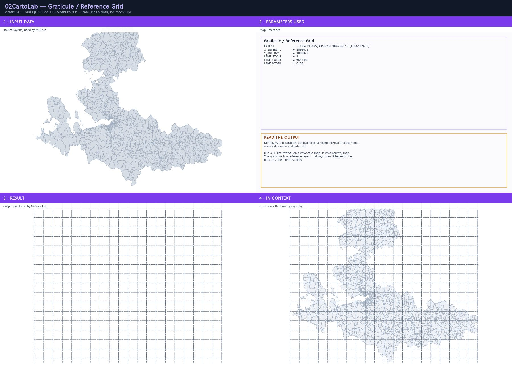
Graticule / Reference Grid
Çıktıyı nasıl okuyun. Graticule bir referans katmanıdır: her zaman verinin altında durur ve veriyle yarışmaz. Metrik UTM ızgarasında sayılar easting ve northing'dir; okuyucu görsel konumu koordinata çevirebilir. Coğrafi ızgarada derecelerdir; okuyucu yeri isimle bulabilir.
Parametreler
Parameter
Açıklama
Type
Default
EXTENT
Grid extent
Extent
—
X_INTERVAL
Vertical line (meridian) interval, 0 = auto
Number
Y_INTERVAL
Horizontal line (parallel) interval, 0 = auto
Number
LINE_STYLE
Grid line style
Solid Line · Dashed Line · Dotted Line · Dash-Dot Line
Izgara çıkmıyor — EXTENT ve aralık uyumsuz; extent biçimini ve CRS'yi kontrol edin.
Çok fazla çizgi — aralığı artırın.
Izgara haritaya hâkim — genişliği azaltın ve açık gri kullanın.
Processing ID: zero2cartolab:graticule_grid
Layout Studio
Şablon galerisi — on yayın arketipi
Bu çıktı hangi baskı arketipini kullanmalı?
Layout Studio, stillenmiş haritayı bitmiş bir sayfaya dönüştürür. On arketip hazırdır: Report Figure (16:9), Academic Journal (A4 iki sütun), Exhibition Poster (A1/A2), Fact Sheet (A4 dikey), Comparative Diptych, UTM Field Sheet, Planning Review Board, Spatial Data Story, Atlas Production Sheet ve Emergency Operations Brief. Her biri kalibre edilmiş kenar boşlukları, tipografi hiyerarşisi ve ızgarayla gelir — üzerinde resim olan boş bir sayfa olarak değil.
Adım adım
Dashboard'dan Layout Studio'yu açın ve Template Gallery sekmesini seçin.
Çıktıyla eşleşen arketipi seçin — galeri her birinin sayfa boyutunu ve amacını gösterir.
Şablon mevcut projenizde katmanlarınızla oluşturulur; başlık, alt başlık ve kaynak metnini düzenleyin.
Arketip referans çerçeve gerektiriyorsa Grid + QPT Studio'dan bir ızgara ön ayarı ekleyin.
Harita çerçevesi ve lejantı ince ayar için düzeni Print Layout Designer'da açın.
Layout Manager'dan PNG, PDF veya SVG olarak 150, 300 ya da 600 dpi'de dışa aktarın.
Sonuç
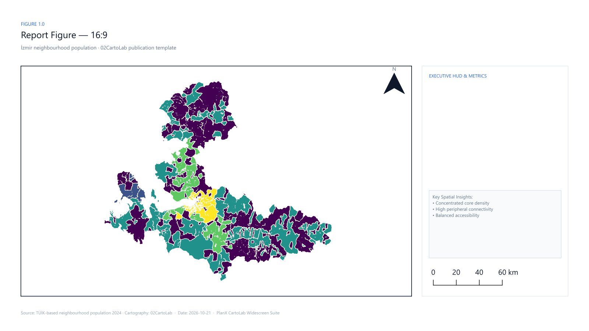
Report Figure — 16:9
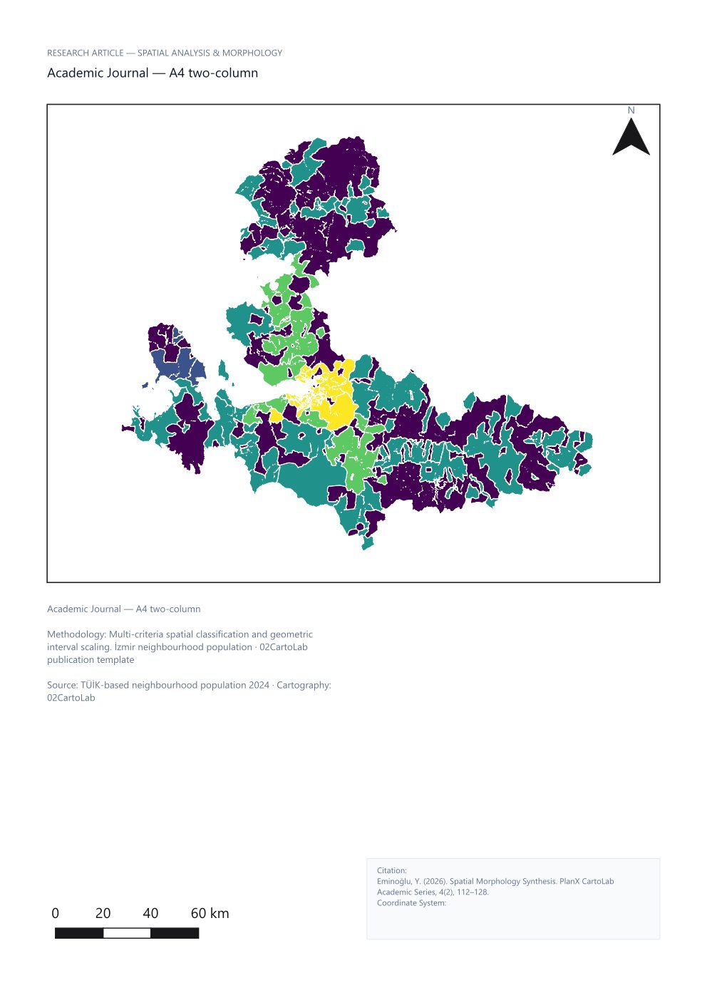
Academic Journal — A4 two-column
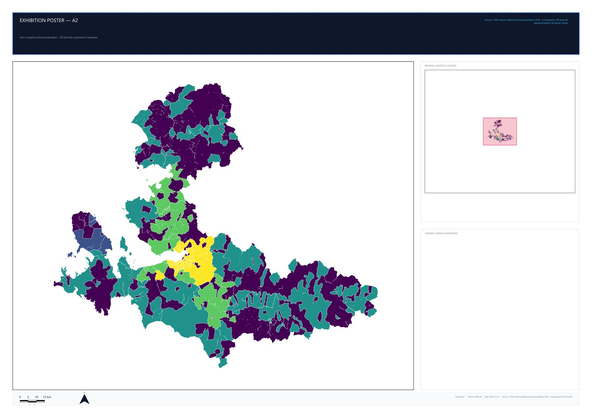
Exhibition Poster — A2
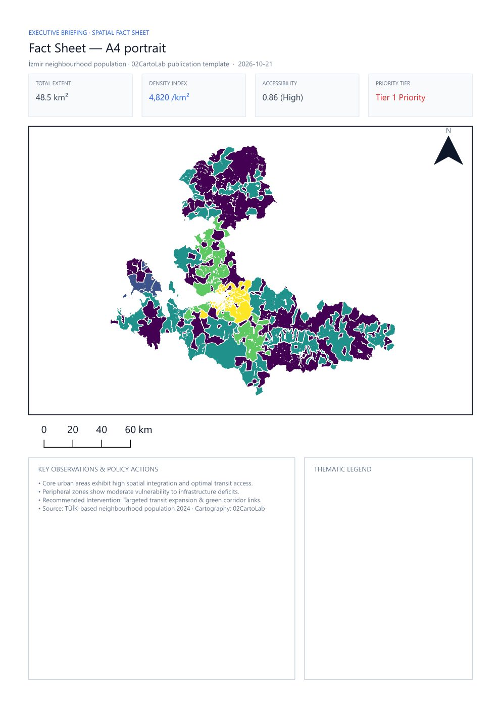
Fact Sheet — A4 portrait
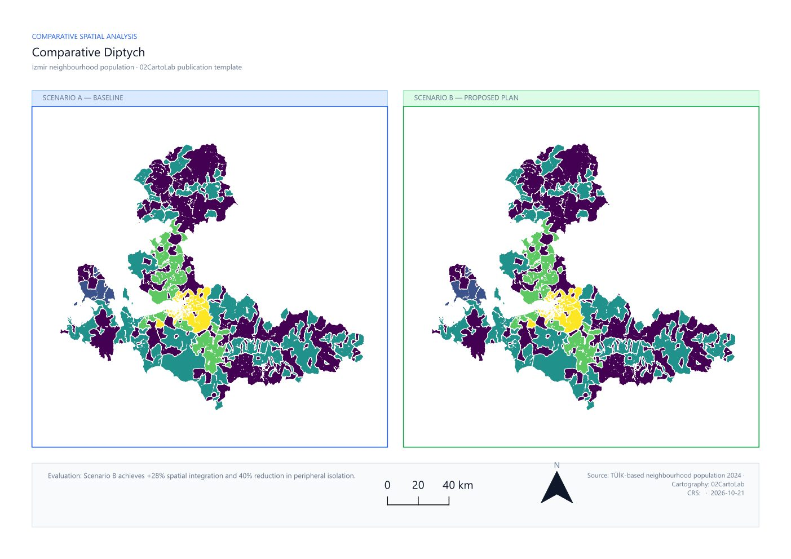
Comparative Diptych
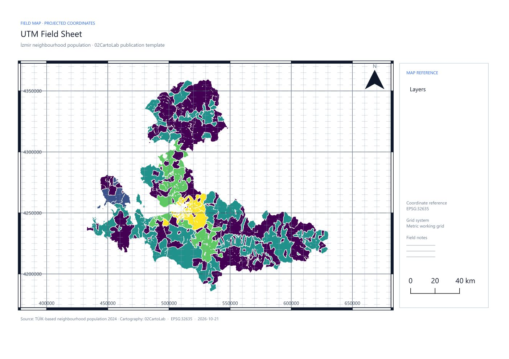
UTM Field Sheet
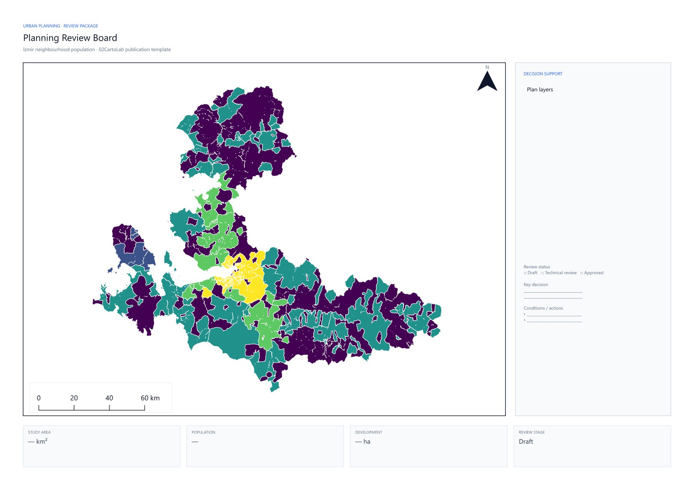
Planning Review Board
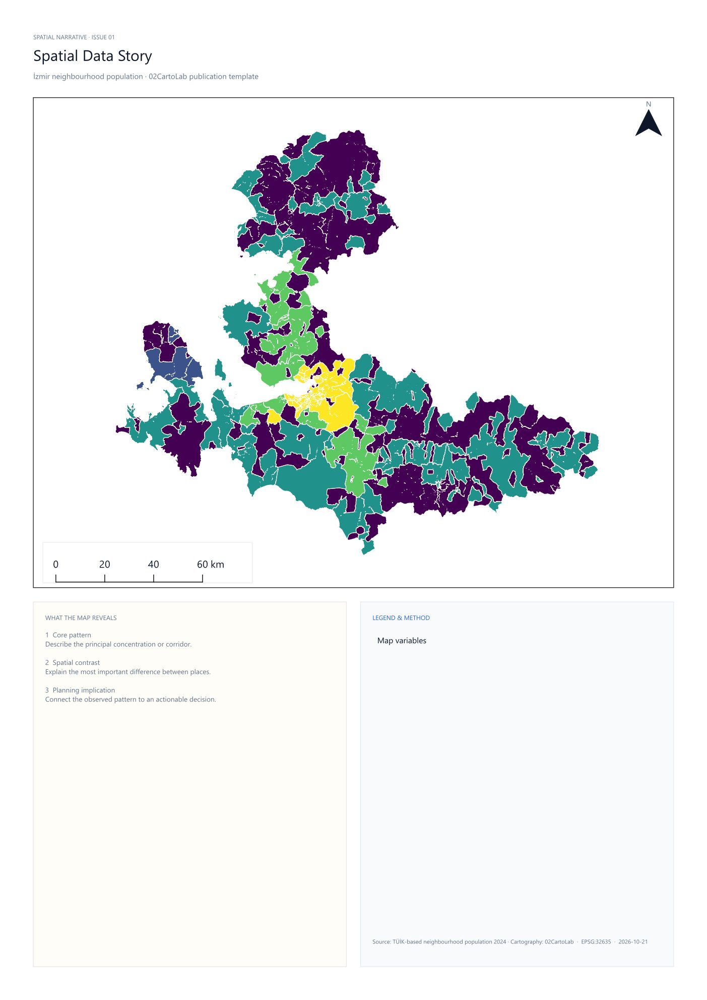
Spatial Data Story
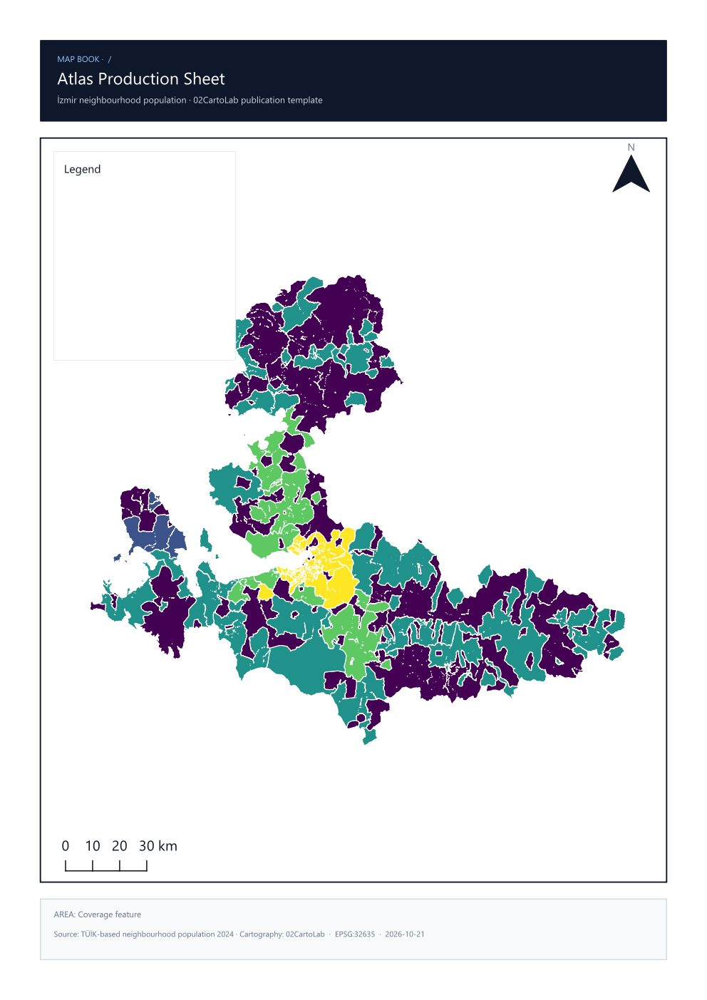
Atlas Production Sheet
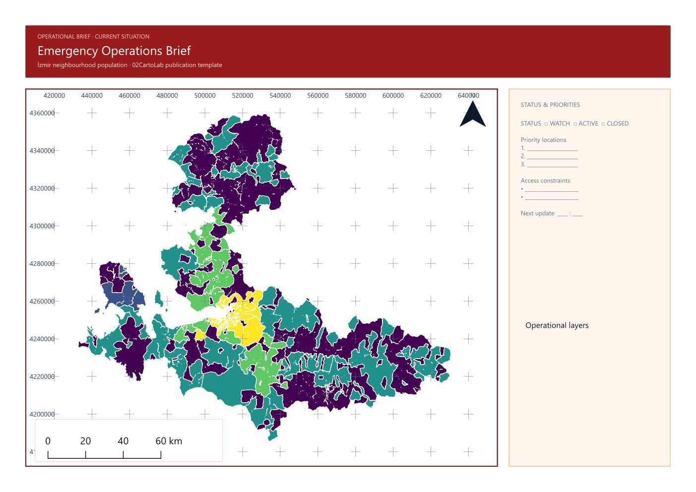
Emergency Operations Brief
Çıktıyı nasıl okuyun. Arketipi zevkle değil, okuma mesafesiyle seçin: bir Report Figure dizüstünde okunur, Academic Journal sayfası 40 cm'de okunur, Exhibition Poster 2 m'den okunur. Şablonlar bu farkları tam olarak tipografi boyutunda, kenar boşluğunda ve veri yoğunluğunda kodlar.
Sorun giderme
Şablon katmanımı yok sayıyor — katman projeye yüklenmiş ve görünür olmalı.
Lejant taşıyor — sınıf sayısını azaltın ya da Designer'da lejant punto boyutunu küçültün.
Harita çerçevesi boş — şablonu oluşturduktan sonra harita öğesinde kapsam ve CRS ayarlayın.
Layout Studio
Auto Map Sheet — tek tıkla bitmiş düzen
Stilize haritam var ama zamanım yok. Eksiksiz, kaynaklı, ölçekli bir baskı sayfası alabilir miyim?
Auto Map Sheet, mevcut görünümden bitmiş bir yayın düzeni kurar: başlıklı harita çerçevesi, süzülmüş lejant, yerleştirilmiş ölçek çubuğu, kuzey oku, isteğe bağlı koordinat ızgarası ve kaynak satırı — sonra düzeni projeye kaydeder; böylece hemen ince ayar yapabilir ya da dışa aktarabilirsiniz.
Adım adım
Önce katmanlarınızı stilledirin, sonra canvas kapsamını yayınlayacağınız alana ayarlayın.
Layout Studio ▸ Map Sheet Studio sekmesini açın.
Sayfa boyutunu seçin (varsayılan A4 yatay) ve bir tipografi ön ayarı belirleyin: swiss_modern, academic_serif, technical_blueprint ya da editorial_warm.
Başlık, alt başlık ve kaynak metnini ayarlayın; hangi donanımın olacağına karar verin: başlık, lejant, ölçek çubuğu, kuzey oku, koordinat ızgarası, çerçeve.
Sayfayı oluşturun. Düzen projenin düzen yöneticisine eklenir ve Designer'da açılır.
Layout Manager'dan PNG, PDF veya SVG olarak 150, 300 ya da 600 dpi'de dışa aktarın.
Sonuç
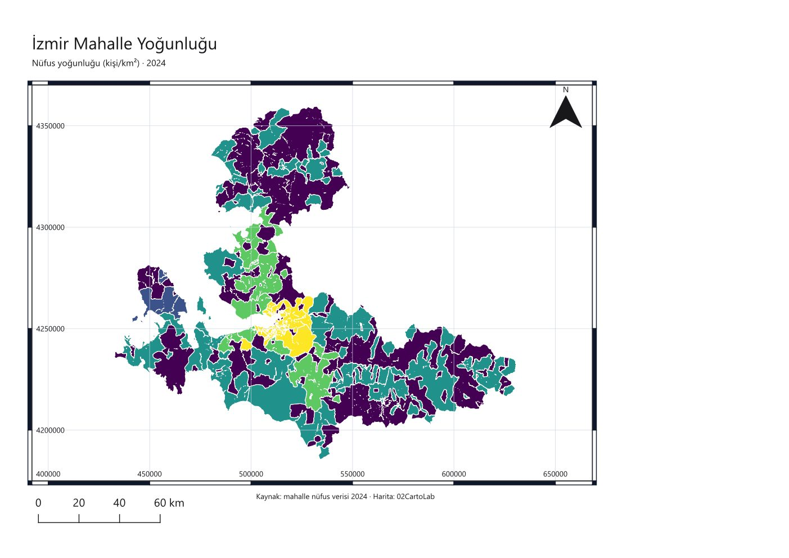
Auto Map Sheet
Çıktıyı nasıl okuyun. Ölçek çubuğu haritanın gerçek coğrafi genişliğine göre yerleştirilir — coğrafi CRS'de jeodezik, projeksiyonlu CRS'de birime duyarlı ve yerleştirmeli. Sayfanın asla teknik olarak doğru ama görsel olarak yanlış bir ölçek çubuğu göstermemesinin nedeni budur.
Sorun giderme
Harita çerçevesi canvas'tan farklı bir alan gösteriyor — sayfa oluşturulma anındaki canvas kapsamını kullanır; önce canvas'ta yakınlaşın.
Lejant sayfadan taşıyor — daha az sınıf ya da Designer'da daha küçük lejant punto boyutu.
Kuzey oku yok — harita dönüşü onu anlamsız kıldığında otomatik olarak bastırılır.